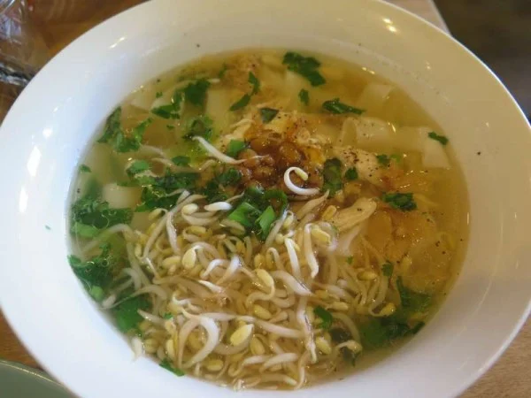

Famous Food
Bai
The key factor of this dish is that it is prepared using lots of locally available herbs and spices. The main ingredients include pork, bamboo shoots and steamed vegetables.
Koat Pitha

It is made using rice flour and bananas. They also add fish to it, as it is considered to be one of their staples.
Bamboo Shoot Fry

Bamboo is first fried and tossed up with herbs. In some cases, shitake mushrooms and other vegetables are added to the mixture.